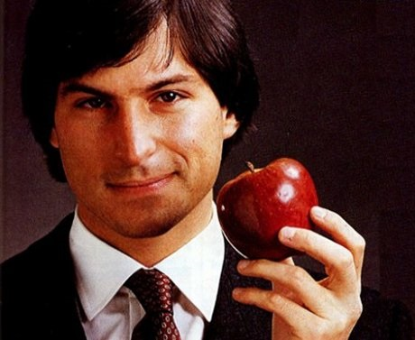
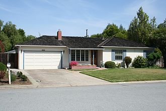
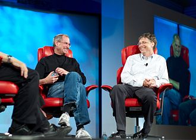

|

ستيفن بول "ستيف" جوبز (24 فبراير 1955 - 5 أكتوبر 2011) كان مخترع وأحد أقطاب الأعمال في الولايات المتحدة. عُرف بأنه المؤسس الشريك والمدير التنفيذي السابق ثم رئيس مجلس إدارة شركة أبل وهو أيضًا الرئيس التنفيذي السابق لشركة بيكسار ثم عضوًا في مجلس إدارة شركة والت ديزني بعد ذلك وحتى وفاته؛ وأثناء إدارته للشركة استطاع أن يخرج للنور كلاً من جهاز الماكنتوش (ماك) بأنواعه وثلاثة من الأجهزة المحمولة وهم (آيبود) و(آيفون) و(آي باد).
في أواخر السبعينيات، قام جوبز مع شريكيه ستيف وزنياك ومايك ماركيولا، وآخرون بتصميم وتطوير وتسويق واحد من أوائل خطوط إنتاج الحاسب الشخصي التجارية الناجحة، والتي تُعرف باسم سلسلة أبل II. فيما بعد وفي أوائل الثمانينات كان جوبز من أوائل من أدركوا الإمكانيات التجارية لفأرة الحاسوب وواجهة المستخدم الرسومية الأمر الذي أدى إلى قيام أبل بصناعة حواسيب ماكنتوش. بعد خسارة الصراع على السلطة مع مجلس الإدارة في 1985 استقال جوبز من أبل وقام بتأسيس نكست وهي شركة تعمل على تطوير منصات الحواسيب في التعليم العالي والأسواق التجارية. ثم قامت أبل بالاستحواذ على نكست في عام 1996 وعاد جوبز إلى أبل وأصبح المدير التنفيذي لها في 1997.
على جانب آخر قام جوبز في عام 1986 بشراء قسم رسوميات الحاسوب في شركة لوكاس فيلم القسم الذي عرف فيما بعد باسم مَفِنَّات بيكسار للرسوم المتحركة. وبقي مديراً تنفيذياً لبيكسار حتى صفقة الاستحواذ التي تمت من قبل شركة والت ديزني وانتقل على إثرها ليكون عضوًا في مجلس إدارة الأخيرة.
عانى جوبز وقبيل عدة سنوات من وفاته من مشاكل صحية بعدما أصيب عام 2004 بنوع نادر من سرطان البنكرياس، وخضع في 2009 لعملية لزراعة كبد، ومنذ يناير وحتى وفاته عام 2011 كان جوبز في عطلة مرضية أعلن خلالها في 24 أغسطس 2011 عن استقالته من منصبه كمدير تنفيذي لشركة أبل مع انتقاله للعمل كرئيس لمجلس الإدارة. حرص جوبز في رسالة استقالته بالتوصية على وضع تيم كوك في منصبه الشاغر.
في الخامس من أكتوبر 2011، وقرابة الساعة الثالثة ظهراً بتوقيت كاليفورنيا (منتصف الليل بتوقيت الشرق الأوسط) توفي جوبز بمنزله في بالو ألتو، عن 56 عاماً، بعد ستة أسابيع من تقديمه استقالته كمدير تنفيذي لأبل. وقد حددت نسخة من شهادة وفاته سبب الوفاة بأنه كان توقف التنفس ما سبب مفارقة جوبز للحياة بشكل فوري، و"ورم البنكرياس الهرموني العصبي المنتشر" كسبب تابع.
أعلنت شركة "أبل" عن خبر الوفاة، وقالت أن رئيسها الراحل الذي كان "نابغة رؤيوياً ومبدعاً قد رحل بعد صراع طويل مع المرض".
النشأة
الأبوان والأسرة
ولد ستيف بول جوبز في سان فرانسيسكو في 24 فبراير 1955 لأبوين غير متزوجين كانا حينها طالبين في الجامعة، وعرضه والداه وهما عبد الفتاح الجندلي (سوري من مدينة حمص)، وجوان شيبل للتبني، بعدما رفضت أسرة شيبل زواجها من غير كاثوليكي، فتبنياه زوجان من كاليفورنيا هما بول وكلارا جوبز،وهما من عائلة أرمنية بولندية على رأسها الزوجان باول وكلارا جوبز، ما ترك أثراً في حياة ستيف الذي لا يذكر عبد الفتاح إلا مع استخدام صفة الوالد البيولوجي.
وقد كُتب القليل عن عبد الفتاح جندلي بوسائل الإعلام الأمريكية، لأنه عاش دائماً في الظل ولم يرو لأحد تقريباً بأنه الوالد الحقيقي للرجل الذي كان دائماً مالئ دنيا الكومبيوترات والإلكترونيات وشاغل المدمنين عليها، وابنه ستيف جوبز نفسه كان يساهم بدوره في إخفاء هوية والده الحقيقي وإخفاء شخصية شقيقته منى، المصنفة للأمريكيين وبالخارج كواحدة من أشهر الروائيات، وبدورها كانت تساهم أيضاً بإخفاء هوية أبيها وأخيها معاً، فاسمها المعروفة به في الولايات المتحدة هو منى سيمبسون، لذلك لم تلتق بأبيها، وبأخيها التقته لأول مرة حين كان عمره 27 سنة، ثم تكررت اللقاءات والاتصالات دائما عبر الهاتف.
تعود قصة تخلي جندلي عن ابنه إلى العام 1955 حين سافر طالب سوري ولد في مدينة حمص إلى الولايات المتحدة للحصول على شهادة الدكتوراه في العلوم السياسية من الولايات المتحدة التي تعرف فيها على جوان كارول شيبل، وفي أمريكا أنجبت له جوان كارول شيبل زميلته في الدراسة ابنهما خارج إطار الزوجية. ينحدر عبد الفتاح الجندلي من منطقة جب الجندلي في حمص، حيث ولد العام 1931 فغادرها وهو بعمر 18 سنة إلى بيروت العام 1949 لدراسة العلوم السياسية في الجامعة الأميركية حيث كان والده ثرياً وصاحب أملاك، ونشط في الحركة القومية العربية كناشط عروبي، وترأس جمعية العروة الوثقى الأدبية الفكرية القومية الاتجاه التي ضمت أسماء معروفة مثل جورج حبش وقسطنطين زريق وشفيق الحوت.
لكنه لم يكن السياسي الوحيد في العائلة، فابن عمه فرحان كان نائباً ووزيراً للتربية في حكومة ناظم القدسي. غادر عبد الفتاح بيروت إلى الولايات المتحدة عام 1950 ليدرس العلوم السياسية في إحدى جامعات نيفادا، وهناك أقام علاقة مع جوان سيمبسون أثمرت ستيف. وبعد أسبوع من ولادة الطفل عرضه جندلي للتبني، وتبناه الزوجان بول وكلارا جوبز من ولاية كاليفورنيا وسمياه ستيفن بول. وتحدث عبد الفتاح كيف رفض والد زوجته زواج ابنته من رجل سوري مما اضطرهم إلى التخلي عن ستيف لأسرة جوبز وقال: توجهت جوان حتى دون أن تعلمني أو أي أحد إلى مدينة سان فرانسيسكو لكي تلد هناك لكي لا تجلب العار لعائلتها ورأت ان هذا الأفضل لجميع الأطراف.
وبعد أشهر من تبنيه من قبل عائلته الجديدة تزوج جندلي وشيبل بعد عشرة أشهر من التنازل عن المولود، وفيما كان ستيف يترعرع في كنف العائلة الجديدة أنجب جندلي وشيبل ابنتهما منى التي اعتنيا بتربيتها على العكس من شقيقها، ولم يدرك عبد الفتاح أن رئيس أبل هو ابنه، وقال جندلي - 80 عامًا السوري المولد، الأميركي الجنسية والذي يشغل منصب نائب رئيس كازينو فندق "بومتاون" والبروفيسور السابق في جامعة نيفادا - مرة لصحيفة ذي صن أن كبرياءه العربي السوري يمنعه من المبادرة بنفسه إلى الاتصال به، وأضاف لست مستعداً، حتى إذا كان أحدنا على فراش الموت، لأن التقط الهاتف للاتصال به، إن على ستيف نفسه أن يفعل ذلك لأن كبريائي السوري لا يريده أن يظن ذات يوم بأنني طامع في ثروته. فأنا لا أريدها وأملك مالي الخاص. ما لا أملكه هو ابني، وهذا يحزنني. رغم أنه أبدى قبل ذلك ندمه على التنازل عن ابنه وعرضه للتبني، وأعرب في أغسطس 2011 لصحيفة ذي صن عن رغبته في لقاء ستيف، بل قال إنه يعيش على أمل أن يتصل ابنه به قبل فوات الأوان، وأضاف: إن تناول فنجان قهوة ولو لمرة واحدة معه سيجعلني سعيدًا جدًا. لكنه لم يلتق ابنه حتى وفاته.
النشأة

منزل العائلة التي تبنت جوبز، ويظهر المرآب الذي أسست فيه شركة أبل.
نشأ جوبز في منزل العائلة التي تبنته في المنطقة التي صارت تعرف لاحقاً باسم وادي السيليكون، وهي مركز صناعات التكنولوجيا الأمريكية. التحق جوبز بالمدرسة فكان يدرس في فصل الشتاء ويذهب للعمل في الأجازة الصيفية، وشغف بالإلكترونيات منذ صغره فكان مولعاً بالتكنولوجيا وطريقة عمل الآلات. كانت أولى ابتكاراته وهو في المرحلة الثانوية عبارة عن شريحة إلكترونية، ورغم ضعف اهتمامه بالتعليم المدرسي تعلق ستيف بالمعلوماتية، وقام بدورة تدريبية لدى "إتش بي" الذي كان مركزها قريباً من منزله في مدينة بالو ألتو وهناك تعرف على وزنياك، ونشأت بينهما علاقة صداقة قوية. واللذان حققا معاً خطوات هامة في عالم التكنولوجيا بعد ذلك.
تخرج جوبز في مدرسته الثانوية، والتحق بجامعة ريد في بورتلاند بولاية أرغون، لكنه لم يحقق النجاح بالجامعة، فرسب في عامه الأول وقرر ترك الدراسة بعد فصل دراسي واحد نظراً لضائقة مالية ألمت بعائلته من الطبقة العاملة، تابع ستيف بعد ذلك دراسات في الشعر والخط ولكن رأسه وقلبه كانا في مكان آخر في كاليفورنيا وتحديداً في المكان الذي سيقام فيه "سيليكون فالي". ولم يقف جوبز ساكناً بعد تركه للدراسة بل سعى لتنمية مهاراته في مجال التكنولوجيا والإلكترونيات، فقدم ورقة بأفكاره في مجال الإلكترونيات لشركة أتاري الأولى في صناعة ألعاب الفيديو وتمكن من الحصول على وظيفة بها كمصمم ألعاب، وكان يهدف من هذا لتوفير المال اللازم للسفر إلى الهند. ثم ترك جوبز عمله لفترة سافر فيها للهند ثم ما لبث أن عاد مرة أخرى لمواصلة عمله في "أتاري".
انتقل ستيف جوبز بعد أن ترك بورت لاند إلى الإقامة في الساحل الغربي، وعثر على وظيفة لدى مصنع ألعاب الفيديو "أتاري" وعاود اتصاله بفوزنياك وقاما بعدد من التجارب، واخترع جوبز جهاز هاتف يسمح بإجراء مكالمات بعيدة مجانية، بعد ذلك انصرف جوبز وفوزنياك إلى حلمهما الكبير، وفي مرأب للسيارات بدآ العمل على حاسوبهما الأول بعد أن باع الأول سيارته والثاني آلته الحسابية العلمية ليتمكنا من تأسيس شركتهما التي شهدت النور في العام 1976 وسميت أبل على اسم الفاكهة المفضلة بالنسبة لستيف جوبز.
الهند
سافر جوبز إلى الهند في مطلع شبابه ثم عاد من رحلته برأس حليق وهو يرتدي جلباباً هندياً حيث اعتنق البوذية هناك، وظل نباتياً طوال حياته. عاد جوبز إلى الولايات المتحدة ليعمل في مرآب بيته على تأسيس شركة أبل بالتعاون مع صديقه ستيف فوزنياك، وكسرا احتكار شركة "أي بي إم" لصناعة الكمبيوتر حين ابتكرا الكمبيوتر الشخصي المحمول، وبفضل ذلك تحولت تلك الشركة الصغيرة فيما بعد إلى إمبراطورية تبلغ قيمة أصولها وفقاً لبورصة نيويورك 346 مليار دولار. في العام 2011 أصبحت أبل - ولفترة وجيزة- أكبر شركة في العالم بقيمة تقدر بحوالي 350 مليار دولار، وهي تتنافس منذ ذلك الحين على هذه المرتبة مع شركة إكسون موبيل النفطية العملاقة.
شركة آبل
الثنائي الإلكتروني
في العام 1970 شهدت حياة جوبز تحولاً رئيسياً حينما التقى بمهندس الحاسوب والمبرمج ستيف وزنياك ليصبحا صديقين، ورغم أنه لا يفقه الكثير في الإلكترونيات إلا أنه فطن إلى عبقرية المنتج الجديد الذي تلاعبت به يد صديقه وزنياك، وأدرك عندها أن العالم بحاجة ماسة لهذا الاختراع، لم يقف عند حدود علمه بالحقيقة، بل خرج ليجعل العالم يستفيد منها. عاد جوبز للعمل في شركة أتاري، وانضم إلى ناد محلي للكمبيوتر مع صديقه ستيف وزنياك الذي كان يصمم كمبيوتره الخاص حينها. وفي عام 1976 استطاع جوبز إقناع متجر محلي للكمبيوترات بشراء 50 جهاز من أجهزة وزنياك قبل صنعها، وبفضل أمر الشراء هذا تمكن جوبز من إقناع أحد موردي الإلكترونيات بإمداده بمكونات تلك الكمبيوترات التي يسعى لصنعها، وهكذا استطاع جوبز إنتاج الكمبيوتر الجديد الذي أطلق عليه أبل 1 من دون الحاجة للاقتراض من أية جهة أو أن يمنح جزء من أسهم شركته لشخص آخر. لكن تطوير هذا الكمبيوتر كان مكلفاً جداً، مما دفع جوبز أن يقنع مايك ماركولا - مستثمر محلي في كاليفورنيا - بتوفير مبلغ 250 ألف دولار، وهكذا استطاع الثلاثة جوبز ووزنياك وماركولا تكوين شركة أبل في كراج عائلة جوبز عام 1976، واضطر جوبز لاحقاً لبيع سيارته لتمويل المشروع. أحدث جوبز مع شريكه المؤسس ستيف وزنياك ثورة في عالم الكومبيوتر الشخصي في النصف الثاني من السبعينات انطلقت من كراج منزله. وفي مطلع الثمانينات كان من الأوائل الذين اكتشفوا القيمة التجارية لأنظمة تشغيل الكومبيوتر بالرسومات والتصاميم والفأرة بدلاً من طباعة الأوامر أو إصدارها باستخدام لوحة المفاتيح. وبعد غياب ومشاكل تجارية مدمرة أعاد إلى أبل مجدها بسلسلة من الأجهزة السحرية بدءًا من آي بود ومرورًا بآي فون ثم آي باد.
بدأت شركة أبل عام 1976 في تجميع وبيع أجهزة الكومبيوتر، لتقدم للعالم بعد إنشائها بعام جهاز أبل 2 الذي يعد أول جهاز كومبيوتر شخصي ناجح يتم إنتاجه على المستوى التجاري. وكان باكورة إنتاج الشركة عام 1984 نظام ماكنتوش الذي كان أول نظام تشغيل ناجح بواجهة رسومية وفأرة، وهي تقنيات لم تكن معروفة من قبل، ليحقق الجهاز نجاحاً وانتشاراً كبيرين في مواجهة إنتل ومايكروسوفت، لكن لم يكد يمضي عام على هذا الإنجاز حتى نشبت خلافات وصراعات داخلية عنيفة انتهت بطرد جوبز من شركته، دفع ذلك جوبز إلى إنشاء شركة جديدة هي نكست التي اهتم فيها بمنصات العمل ذات الإمكانيات المتطورة بدلاً من الحواسيب الشخصية، ووضع من خلالها نظام برمجيات أوبجيكت أرونتيد الذي كان الأساس لنظام تشغيل ماك الحديث، وفي العام 1986 اشترى قسم رسوميات الحاسوب في شركة لوكاس فيلم ليحولها إلى شركة بكسار التي أصبحت بعد ذلك أحد أكبر شركات إنتاج أفلام الكرتون ثلاثية الأبعاد 3D، والتي قدمت لنا أكثر الأفلام نجاحاً في تاريخ هذه الصناعة.
أبل 1
انطلق جوبز ووزنياك في طريقهم لتطوير جهازهما الجديد، فبعد أبل 1 سعيا من أجل إنتاج كمبيوتر آخر أكثر تعقيدًا ولكن أسهل في الاستخدام، وقد جذب نجاحهما أعين المستثمرين، ففي عام 1977 قرر الرئيس التنفيذي السابق لشركة أنتل مايك ماركولا الاستثمار في أبل، وأصبح رئيس مجلس إدارتها، بالإضافة لعدد من المستثمرين الآخرين، جاء أبل 2 بعد ذلك ليشهد انطلاقة قوية في مجال الكمبيوتر الشخصي ويكتسح السوق الأمريكي بما يتضمنه من تكنولوجيا متقدمة وبرامج عالية الجودة، تمكن جوبز من تسويق منتجه الجديد، فباع مئات الأجهزة، ولكن لم يتمكن لوزنياك من الاستمرار في تحقيق حلمه حيث تعرض لحادث طائرة، خرج منه بإصابات بالغة لم يتمكن من الاستمرار بسببها، فقرر التفرغ لحياته ومشاريعه الإجتماعية، وتدريس الكمبيوتر في مكتبه بكاليفورنيا.
الخلاف
بدأت الشركة تكبر لتحقق القفزة الكبرى سنة 1984 حين قدم جوبز نظام ماكنتوش، الذي كان أول نظام تشغيل ناجح بواجهة رسومية وفأرة، كانت فكرة الفأرة مع حجم الجهاز الصغير وواجهته الرسومية أمراً مدهشاً أيامها، فحقق هذا الجهاز نجاحاً وانتشاراً غير مسبوق في مواجهة إنتل وميكروسوفت، لكن لم يكد يمضي عام على هذا الإنجاز حتى نشبت خلافات وصراعات داخلية عنيفة، واستقال جوبز بعد طرده وترك الشركة في 1985 إثر هذه الخلافات الداخلية على السلطة، وأسس شركة (نكست) لأجهزة الكمبيوتر وبعد فترة تداعت مجموعة أبل إلى أن عاد إلى قيادتها في 1997.
قام جون سكولي بفصل جوبز من شركة أبل الذي يرجع له الفضل في تأسيسها وقام ببيع كامل حصته بها، كان ذلك أصعب شيء حدث لجوبز لكنه كما قال كان هذا أفضل شيء حدث له، حيث دفع ذلك جوبز لإنشاء شركة جديدة هي نكست ستيب وشارك في تمويل هذه الشركة الجديدة كبار رجال الأعمال والتكنولوجيا مثل الملياردير روس بيرو، وفي عام 1989 قام جوبز بإنتاج أول كمبيوتر يحمل اسم نكست والذي على الرغم من تفوقه التقني إلا أنه لم يكتب له النجاح تجاريًا نظرًا لارتفاع سعره. واهتم جوبز في هذه الحقبة بمنصات العمل ذات الإمكانيات المتطورة بدلاً من أجهزة الكومبيوتر الشخصية، ووضع من خلالها نظام برمجيات أوبجيكت أورنتيد الذي كان الأساس لنظام تشغيل ماك الحديث.
ازداد اهتمام جوبز في هذه الفترة بأناقة التصميم التي كانت ثورية، انتقل جوبز بعدها لمرحلة جديدة في العام 1986 حين قام بشراء قسم رسوميات الكومبيوتر في شركة لوكاس فيلم ليحولها إلى شركة بكسار، والتي أصبحت بعد ذلك أحد أكبر شركات إنتاج أفلام الكارتون ثلاثية الأبعاد، لتقدم للعالم أكثر الأفلام نجاحاً في تاريخ هذه الصناعة. تعرض مصنع جوبز الجديد المسمى نكست للخسائر المتتالية مما جعله يغلقه في فبراير 1993، وتوقف عن تصنيع الكمبيوترات مكتفياً بالبرامج. وتداعت شركة أبل إلى أن عاد إلى قيادتها في 1997، ومذاك سطع نجم التفاحة المقضومة الرسم الذي تتخذه أبل شعاراً لها، مع إطلاق الشركة منتجات اكتسحت الأسواق من جهاز كومبيوتر ماكينتوش في 1998 إلى جهاز آي باد اللوحي في 2010 مروراً بجهاز الموسيقى الجوال آي بود (2001) والهاتف المتعدد الوظائف آي فون (2007).
العودة

ستيف جوبز (يسار) وبيل غيتس (يمين).
لم تتمكن أبل من تحقيق الثبات فأخذت في الانهيار سريعاً وتقلصت حصتها في السوق بشكل كبير، وتنقلت من مدير إلى أخر حتى استقرت رئاسة مجلس الإدارة مع جيلبرت أميليو والذي لم يجد طوق للنجاة ينقذ به الشركة من الانهيار سوى ستيف جوبز، والذي قام أميليو بدعوته للانضمام لمجلس إدارة أبل كمستشار لها عام 1995. وفي هذا العام تمكنت شركة جوبز نكست من تحقيق أرباحاً بعد تأرجحها صعوداً وهبوطاً، وبدأ تعاون مع قطبي التكنولوجيا بيل غيتس – الرئيس السابق لمايكروسوفت - وستيف جوبز لتصميم برنامج ويندوز إن تي. في ديسمبر 1995 قامت شركة أبل بشراء شركة نكست بأربعمائة مليون دولار، وتم تعيين ستيف جوبز رئيساً تنفيذياً مؤقتاً لأبل عام 1997 براتب قدره دولار واحد سنوياً مما أدخله في مجموعة جينيس للأرقام القياسية كأقل الرؤساء التنفيذيين تقاضياً للراتب في العالم.
وبعد أن أطلق جوبز كمبيوتر آي ماك عادت شركة أبل مرة أخرى لتلتقط أنفاسها وتستعيد مكانتها في سوق الكمبيوترات الشخصية مرة أخرى، وفي يناير 2000 أصبح جوبز رئيساً تنفيذياً دائماً للشركة، ومالكاً لثلاثين مليون سهم منها وصعدت أرباحها سريعًا، واشتهر جوبز بمؤتمراته التي يستعرض فيها منتجات أبل الجديدة بمهارة أصبحت نموذجاً في مجال العرض والتسويق، ليأتي نجاح أبل التالي في منتج بعيد عن مجال الكومبيوتر.
أبل 2
كان جهاز أبل 2 مختلفاً عن بقية الأجهزة المتداولة في تلك الفترة، حيث كان يأتي مكتملاً من دون الحاجة إلى تجميع أجزائه المختلفة، وحقق الجهاز الجديد نجاحاً فورياً، وشكل بداية عهد الكمبيوتر الشخصي، وحقق مبيعات بأكثر من ستة ملايين وحدة قبل إيقاف إنتاجه عام 1993.
عالم الكرتون
مرحلة ثانية انتقل إليها جوبز حيث قرر اختراق عالم الكرتون ولم يبتعد كثيراً عن التكنولوجيا في ذلك بل وظفها من أجل إضافة المزيد من الإبهار والروعة عليها، ففي عام 1986 م قام بشراء أستديو للرسوم المتحركة من جورج لوكاس ودفع في هذه الصفقة 10 مليون دولار فأصبح الرئيس التنفيذي ورئيس مجلس الإدارة لها وقام بالإبداع في هذا المجال الجديد فدمج الرسوم المتحركة مع تكنولوجيا الكمبيوتر الحديثة، وحقق الكثير من النجاح ففازت شركة بيكسار عام 1988 م بجائزة الأوسكار عن فيلمها القصير تين توي (Tin Toy) المنفذ بالكامل على الكمبيوتر.
وجاء جوبز بتكنولوجيته لينقل الرسوم المتحركة من الشكل التقليدي إلى شكل جديد ليحقق المزيد من الإبهار، وتوالت الأعمال التي أنتجتها بيكسار ووالت ديزني فأصدرت فيلم حكاية لعبة عام 1995 والذي حقق إيرادات ضخمة، وبعده حياة حشرة، حكاية لعبة 2، شركة المرعبين المحدودة، البحث عن نيمو، الخارقون وغيرها العديد من الأفلام المميزة. تألقت شركة بيكسار وازدهرت بأفلامها المميزة وطرحت الشركة في اكتتاب في نوفمبر عام 1995 وبيعت أسهمها بـ 22 دولار للسهم صعدت سريعاً إلى 39 دولار، أمتلك جوبز فقط دولار ونصف لكل سهم منها وأصبح ملياردير، كما يمتلك جوبز حصة كبيرة في شركة والت ديزني.
الاستخدام المحمول
وكانت النقلة الثانية التي أدخلها جوبز إلى عالم التكنولوجيا وبدأت عام 2000 هي تحويل استخدام أجهزة الكمبيوتر من الاستخدام المكتبي إلى الاستخدام المحمول عن طريق سلسلة من المنتجات التي لاقت رواجاً، وتشتمل هذه السلسلة على أجهزة (آيبود) و(آيفون) و(آي باد) ومتجر (آي تيونز) الموسيقي العملاق ومتجر (أبل ستور) الذي يوفر لمستخدمي (آي فون) تطبيقات هائلة تغطي كل مناحي الحياة.
ابتكارات جوبز
جوبز لم يتوقف عند حد معين بل سعى دائمًا من أجل البحث عن الجديد في التكنولوجيا، ومن الابتكارات التي يرجع الفضل فيها لجوبز هو ما قدمه عام 2001 وهو جهاز "الأي بود" أو جهاز الموسيقى المحمول الذي يقوم بتحميل الأغاني من نوع MP3، وحقق هذا المنتج انتشاراً هائلاً في جميع الأسواق العالمية، وبفكر جوبز التسويقي المميز تمكن من إقناع معظم شركات الأغاني بمنحه حقوق تسويق أغانيها على الإنترنت، واستكمالاً لابتكاراته قدم جوبز برنامج أي تونز وهو برنامج موسيقي رقمي يبيع الأغاني ويحملها على الأي بود عبر الإنترنت.
بعد عودة جوبز بقوة إلى شركة أبل عام 1996 بعدما اشترت شركة نكست، ليبدأ تألق الشركة من جديد عبر تقديم جهاز آيماك المصمم للاستفادة القصوى من الإنترنت، وفي 2001 قدم جوبز في جهاز آيبود بحجمه الصغير وتصميمه الأنيق، ولكن الإنجاز الأهم كان عام 2007 باختراع جهاز آيفون الأنيق والمتطور الذي أحدث انقلاباً في عالم الأجهزة النقالة من خلال شاشة اللمس المتطورة التي زود بها، وفي العام 2010 ظهر جهاز الحاسوب اللوحي آيباد ثم آيباد 2.ومن النجاحات التي حققتها الشركة في عهد جوبز تطوير جهاز مشغل الموسيقى آي بود عام 2001، والهاتف الذكي آي فون عام 2007، ثم الحاسوب اللوحي آي باد عام 2009.
عندما سئل جوبز ذات مرة عن سر الأفكار الخيالية التي تتمتع بها أبل قال "إن من يعمل في الشركة ليسوا فقط مبرمجين بل رسامين وشعراء ومهندسين ينظرون للمنتج من زوايا مختلفة لينتجوا في النهاية ما ترونه أمام أعينكم". ومن كلام جوبز السابق يظهر لنا السر وراء هذا النجاح المبهر الذي وصل إليه ووصلت إليه شركته "أبل".
حياته الشخصية
تقابل والدا جوبز في جامعة ويسكونسن-ماديسون. عبد الفتاح "جون" جندلي مسلم سوري كان يدرّس هناك. وجوان كارول شيبل وهي كاثوليكية من أصول سويسرية وكانت من طلابه. كانت بمثل العمر تقريباً حيث حصل جندلي على شهادة دكتوراة في سن مبكرة. أصبحت شيبل لاحقاً أخصائية في علم أمراض النطق واللغة. وجندلي صار أستاذاً في جامعة نيفادا في الستينات ثم اتجه إلى صناعة الأطعمة والمشروبات. ومنذ 2006، أصبح نائب الرئيس لأحد الكازينوهات في رينو، نيفادا. وفي ديسمبر 1955، بعد عشرة أشهر من ولادة جوبز وتبنيه من قبل عائلة أخرى، تزوج شيبل وجندلي. وفي 1957 أنجب الزوجان فتاة اسمها منى. ثم تطلقا في عام 1962 وفقد جندلي الاتصال بابنته. وتزوجت شيبل مرة أخرى وأصبحت ابنتها منى سيمبسون تحمل اسم زوج أمها.
في الثمانينات وجد ستيف أمه بالولادة، جوان شيبل سيمبسون، التي أخبرته عن أخته البيولوجية منى. وقابل أخته للمرة الأولى عام 1985 وأصبحا صديقين مقربين. أبقى الأخوان معرفتهما سراً حتى 1986 حين قدمته منى في حفل كتابها الأول.
بعد أن قررا البحث عن والدهما، عثرت سيمبسون على والدها جندلي مديراً لأحد المقاهي. وكانت هوية ابنه مجهولة لديه. جندلي أخبر ابنته أنه كان قبل ذلك يدير مطعماً في وادي السيليكون وأنه "حتى ستيف جوبز كان قد اعتاد أن يأكل فيه". في مقابلة مسجلة لجوبز مع كاتب سيرته والتر إزاكسون، بثت في برنامج 60 دقيقة قال: "يوم كنت أبحث عن أمي الحقيقية، بديهياً كنت أبحث أيضاً عن أبي، وعلمت عنه القليل ولم يرقني ما علمت. سألت منى بألا تخبره أبداً أنها قابلتني.....وألا تخبره بشيء عني أبداً". جوبز بقي على اتصال متقطع بوالدته جوان سيمبسون، التي تعيش في دار مسنين بلوس أنجلوس. صرح ستيف جوبز في كتابه بخصوص والديه البيولوجيين: "لقد كانا كمصرف للنطاف. هذه ليست فظاظة بل هو الأمر كما كان، مخزناً لنطفتي، لا أكثر." صرّح جندلي في لقاء له مع صحيفة ذا صن البريطانية في أغسطس 2011، أن جهوده بالاتصال بجوبز كانت غير ناجحة، وقال: "إن كبريائي السوري يمنعني أن أتواصل معه أولاً. أخشى أن يظنني طامعاً بماله وأنا لست كذلك، فلدي مالي الخاص، الذي لا أملكه هو ابني...وهذا ما يحزنني." في السنة ذاتها أرسل جندلي ملفه الطبي بالبريد إلى ابنه حين ظهرت أخبار عن اضطراب البنكرياس لديه.
قالت منى سيمبسون في كلمتها في حفل لتأبينه في كنيسة ميموريال في جامعة ستانفورد.
نشأت طفلة وحيدة بأمٍ عزباء. ولأننا كنا فقراء ولأني كنت أعلم بأن والدي قد هاجر من سوريا، فقد تخيلته يبدو كعمر الشريف. أملت أن يكون غنياً وعطوفاً وأن يأتي لحياتنا (وشقتنا التي لم تفرش بعد) ويساعدنا. لاحقاً بعد أن التقيته، حاولت تصديق أنه قد تركنا وغيّر رقمه ولم يدع خلفه عنواناً لنتواصل معه لأنه كان ثورياً متقد الحماس، من ضمن من يسعون إلى غدٍ أفضل للعالم العربي. طوال حياتي، حتى كراشدة، بقيت انتظر رجلاً لأحبه ويبادلني الحب بالمثل. لعقود ظننت ذلك الرجل سيكون أبي. حتى بلغت الخامسة والعشرين وقابلته، كان أخي.
طفل جوبز الأول، ليزا برينان-جوبز، ولدت عام 1978، من صديقته التي طال بقائه معها كريس آن برينان، رسامة Bay Area. لسنتين ربت ابنتها في دارٍ للرعاية. فيما كان جوبز ينكر أبوته لها محتجاً بأنه عقيم. لكنه أقر فيما بعد بأن ليزا ابنته. تزوج جوبز لورين باول في 18 مارس 1991 وأقاما حفل زفافهما في فندق (أواني) بمنتزه يوسمايت الوطني. ترأس حفل الزفاف راهب زن بوذي يدعى كوبن تشينو أوتوقاوا.
ابنهما، ريد، ولد في سبتمبر 1991، متبوعاً بفتاتين، إيرين ولدت في أغسطس 1995، وإيف المولودة في 1998. وتعيش العائلة في بالو ألتو، كاليفورنيا.
في السيرة الغير مصرحة (The Second Coming of Steve Jobs) ذكر المؤلف آلن دويتشمان، أن جوبز كان على علاقة عاطفية بمغنية الفلكلور الأمريكية جوان باييز. حيث نقل دويتشمان عن إليزابيث هولمز، من أصدقاء ستيف في الفترة التي قضاها في كلية ريد، حسب ما قالت أنها "تعتقد أن جوان باييز قد وقعت في غرام ستيف، حين كانت على علاقة ببوب دايلان" (دايلان كان مغني إيقونة أبل المفضل). في سيرة غير مصرحة أخرى تحمل عنوان (iCon: Steve Jobs) لجيفري يونق وويليام إل. سايمون. أشار المؤلفان إلى أنه يحتمل أن ستيف كان قد تزوج من باييز، لكن عمرها ذلك الوقت (41 عاماً) لم يجعل حصولهما على أطفال أمراً مرجحاً.
جوبز كان أحد المعجبين بفرقة البيتلز. وكان قد أشار إليهم في مناسبات عدة في عروضه. وحين سوئل عن نموذجه في الأعمال في برنامج 60 دقيقة، أخبر بأنه يعتبر تلك الفرقة أنموذجاً له.
في 1982، اشترى جوبز شقة في السان ريمو، مبنى سكني فاخر في نيويورك وذو سمعة سياسية تقدمية، حيث ديمي مور، ستيفن سبيلبرغ، ستيف مارتن والأميرة ياسمين آغا خان ابنة ممثلة هوليود ريتا هيوارث، قد امتلكوا شققاً في نفس المبنى. بالاستعانة بخدمات المعماري آي إم بي، أمضى جوبز سنوات في تجديد شقته في الدورين العلويين من البرج الشمالي دون أن ينتقل إليها مطلقاً. حتى باعها بعد قرابة العقدين إلى المغني الأيرلندي بونو.
في عام 1984، اشترى جوبز منزل آل جاكلينق. البالغة مساحته 1600 م²، بـ14 غرفة نوم. القصر المبني على الطراز الإسباني صممه جورج واشنطن سميث في ووودسيد، سان ماتيو، كاليفورنيا. ورد أن القصر ظل شبه غير مفروش طوال مدة إقامة ستيف جوبز البالغة عشر سنوات فيه. وطبقاً لبعض التقارير، كان يبقي دراجة BMW R60/2 نارية من طراز 1966 في غرفة المعيشة، وقد سمح لبيل كلينتون باستخدامه في 1998. رد كلينتون الجميل إلى جوبز - الذي كان ديموقراطياً - وقضى الأخير ليلة في غرفة نوم لينكولن في البيت الأبيض. منذ أوائل التسعينات أصبح جوبز يعيش في منزل في الحي القديم ببالو ألتو.
يرتدي جوبز عادة بزةً سوداء بأكمام طويلة وياقة عالية قليلاً. صانعها مصمم الأزياء الياباني ايسي مياكي (وقيل أيضاً أنها صنعت بواسطة متجر سانت كروا). ويرتدي بنطال الجينز لي فايس 501 الأزرق وأحذية نيو بالانس 991 سنيكرز الرياضية. أخبر والتر إزاكسون "...بدأ يحب فكرة ذاك الزي الموحد، بسبب ملائمته لكل أيامه، وقدرته على صنع نمط خاص به".
سيارة جوبز كانت مرسيدس-بنز SL 55 AMG فضية من طراز 2008 لا تحمل لوحات عليها، حيث يسمح القانون في كاليفورنيا بستة أشهر للسيارات الجديدة يمكن خلالها عدم تركيب لوحة تسجيل. وجوبز استغل تلك الميزة بالحصول على سيارة SL جديدة كل ستة أشهر.
|